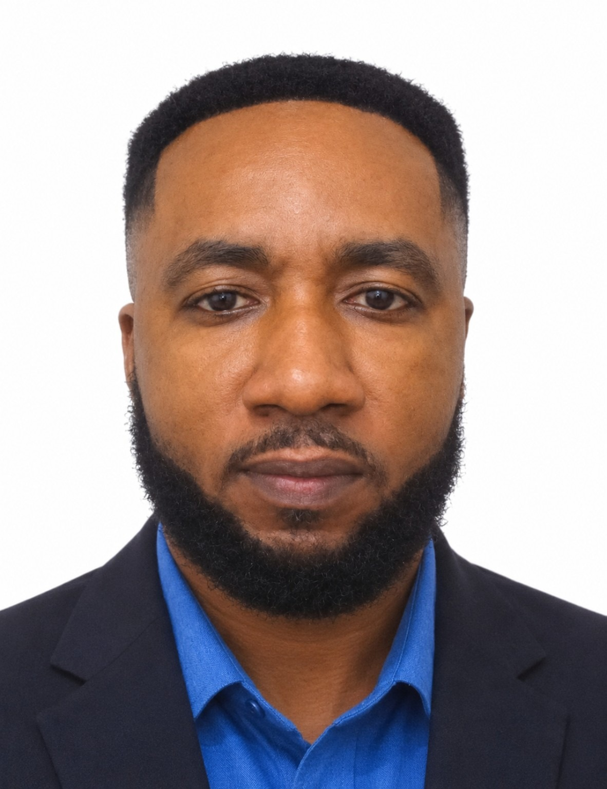

MPH (HI), BPH (HI), Dip. (HI), Cert. Monitoring and Evaluation (Global Health), Project Management (Global Health), Leadership and Management, Certified Data Protection Supervisor.
I am Richmond Bediako Nsiah, a public health researcher and academician who is interested in generating and sharing knowledge that can contribute to improved communities and professional practice.
This website brings together my research interests, academic profiles, publications and professional information.

Maternal, newborn, child and adolescent health, antenatal care, family planning and child health outcomes.
Malaria, tuberculosis, hepatitis and other infectious diseases, surveillance, prevention and control.
Chronic disease epidemiology, risk factors, prevention and population-level NCD control.
Health education, community engagement, behaviour change and strategies supporting healthier populations.
Water, sanitation and hygiene, environmental risks, infection prevention and healthy living environments.
Health information systems, data quality, routine health information, digital health and data use.
Descriptive and analytical epidemiology, disease surveillance, outbreak preparedness and public health action.
Research design, quantitative and qualitative methods, biostatistics, data management and interpretation.
Programme monitoring, evaluation, performance measurement, learning and evidence use.
Health service delivery, quality improvement, access to care, health planning and evidence-informed management.
Geospatial approaches to health planning, accessibility, disparities and spatial decision-making.
Social and geographic determinants of health, access disparities and community-focused interventions.
Department of Health Informatics & Health Service Management
Klintaps University College of Health and Allied Sciences, Accra.
Operation Eyesight Universal, Ghana
USAID–John Snow Research & Training Institute, Inc. (JSI)
Ghana Health Service
Master of Public Health
Certified Data Protection Supervisor
Explore my research on maternal and child health, infectious diseases, health information, WASH, epidemiology and public health practice.
Browse Publications & Abstract PreviewsEmail
richmondbediakonsiah@gmail.com
Contact
+233 (0)241 675 131
Address
Klintaps University College of Health and Allied Sciences
Accra, Ghana
For research collaboration, academic enquiries or professional opportunities, please get in touch.
Find the university on Google Maps for directions and location details.